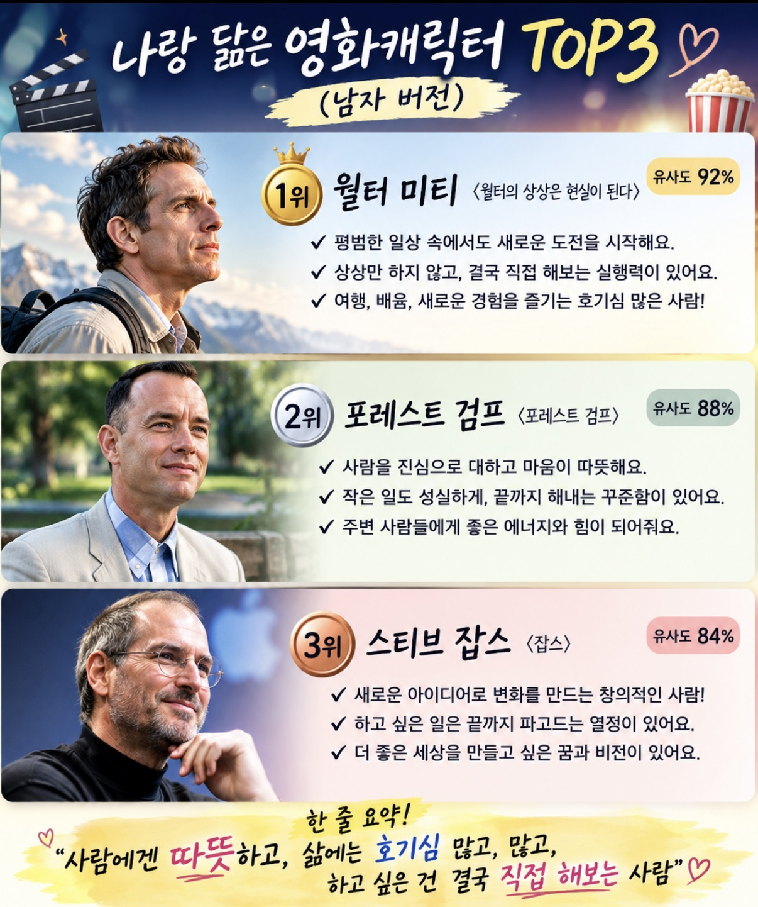
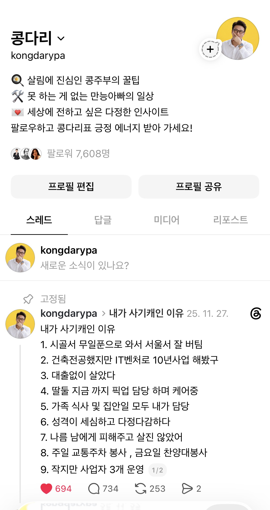

호기심과 실행력으로 만드는 성장
새로운 경험을 기꺼이 받아들이고, 하고 싶은 일은 결국 직접 해보는 마음. 콩다리가 Threads에서 나누는 긍정의 에너지입니다.
콩다리는 사람의 마음에 귀 기울이고, 서로의 성장을 응원합니다. 일상에서 발견한 작은 통찰과 실행의 이야기를 Threads에서 다정하게 나눕니다.
Threads에서 콩다리 만나기 ↗
콩다리는 변화와 도전을 두려워하지 않으며, 경험에서 얻은 배움을 사람들과 나눕니다. 작은 마음도 소중하게 바라보는 시선으로 서로가 자기다운 길을 만들어갈 수 있도록 응원합니다.

새로운 경험을 기꺼이 받아들이고, 하고 싶은 일은 결국 직접 해보는 마음. 콩다리가 Threads에서 나누는 긍정의 에너지입니다.
사람의 마음을 깊이 이해하고, 진심 어린 말로 서로를 위로합니다.
배움과 경험을 멈추지 않고, 자신만의 길을 직접 만들어갑니다.
좋은 마음을 생각에만 두지 않고, 오늘 할 수 있는 작은 행동으로 옮깁니다.